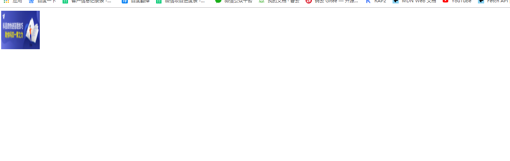
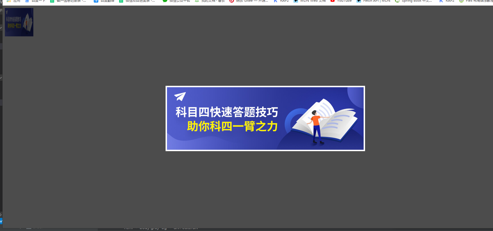

<!DOCTYPE html>
<html lang="en">
<head>
<meta charset="UTF-8">
<meta name="viewport" content="width=device-width, initial-scale=1.0">
<meta http-equiv="X-UA-Compatible" content="ie=edge">
<title>点击图片查看原图</title>
</head>
<script src="https://apps.bdimg.com/libs/jquery/2.1.4/jquery.min.js"> </script>
<body>
<div>
<img class="pimg" src="http://qinius.scqgkj.com/1564478463ZdTYhX.jpg"
style="display: block;margin-bottom: 10px;" width="100px" height="100px">
</div>
<div id="outerdiv"
style="position:fixed;top:0;left:0;background:rgba(0,0,0,0.7);z-index:2;width:100%;height:100%;display:none;">
<div id="innerdiv" style="position:absolute;">
<img id="bigimg" style="border:5px solid #fff;" src="" />
</div>
</div>
</body>
</html>js
//图片放大
$(function () {
$(".pimg").click(function () {
var _this = $(this);//将当前的pimg元素作为_this传入函数
imgShow("#outerdiv", "#innerdiv", "#bigimg", _this);
});
});
function imgShow(outerdiv, innerdiv, bigimg, _this) {
var src = _this.attr("src");//获取当前点击的pimg元素中的src属性
$(bigimg).attr("src", src);//设置#bigimg元素的src属性
/*获取当前点击图片的真实大小，并显示弹出层及大图*/
$("<img/>").attr("src", src).load(function () {
var windowW = $(window).width(); //获取当前窗口宽度
var windowH = $(window).height(); //获取当前窗口高度
var realWidth = this.width; //获取图片真实宽度
var realHeight = this.height; //获取图片真实高度
var imgWidth, imgHeight;
var scale = 0.8; //缩放尺寸，当图片真实宽度和高度大于窗口宽度和高度时进行缩放
if (realHeight > windowH * scale) { //判断图片高度
imgHeight = windowH * scale; //如大于窗口高度，图片高度进行缩放
imgWidth = imgHeight / realHeight * realWidth; //等比例缩放宽度
if (imgWidth > windowW * scale) { //如宽度扔大于窗口宽度
imgWidth = windowW * scale; //再对宽度进行缩放
}
} else if (realWidth > windowW * scale) { //如图片高度合适，判断图片宽度
imgWidth = windowW * scale; //如大于窗口宽度，图片宽度进行缩放
imgHeight = imgWidth / realWidth * realHeight; //等比例缩放高度
} else { //如果图片真实高度和宽度都符合要求，高宽不变
imgWidth = realWidth;
imgHeight = realHeight;
}
$(bigimg).css("width", imgWidth); //以最终的宽度对图片缩放
var w = (windowW - imgWidth) / 2; //计算图片与窗口左边距
var h = (windowH - imgHeight) / 2; //计算图片与窗口上边距
$(innerdiv).css({ "top": h, "left": w }); //设置#innerdiv的top和left属性
$(outerdiv).fadeIn("fast"); //淡入显示#outerdiv及.pimg
});
$(outerdiv).click(function () { //再次点击淡出消失弹出层
$(this).fadeOut("fast");
});
}

点击后：（再次点击取消）
